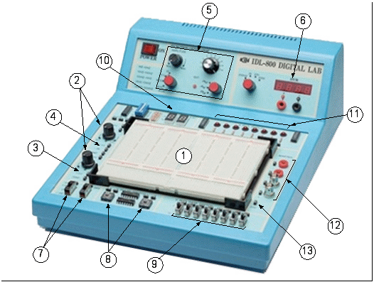

электронный ресурс по учебной дисциплине 1-58 01 01 - "Инженерно-психологическое обеспечение информационных технологий"
|
||
| Оглавление | Программа | Теория | Практика | Контроль знаний | Об авторах | ||
| Практика
ПРИЛОЖЕНИЕ 4 Универсальная лабораторная установка IDL-800 Digital Lab.
Лабораторная установка IDL-800 рис. П.1 предназначена для физического макетирования и исследования функционирования цифровых логических устройств, а также может быть использована для исследования аналоговых устройств. 
Рис. П.1. Лабораторная установка IDL-800 Digital Lab.
Лабораторная установка содержит источники постоянного напряжения, функциональный генератор, цифровой вольтметр, восьмиразрядный светодиодный дисплей, два семисегментных индикатора и логические переключатели. В лабораторную установку входит наборная плата AD-200, на которой собираются исследуемые устройства. Детализация лабораторной установки показана на рис. П.1:
0 – 199,9 V; 0 – 19,99 V; 0 – 1,999 V; 0 – 199,9 mV. Входное сопротивление: 10 Мом в любом диапазоне. Внимание. Цифровой вольтметр не имеет защиты от перегрузки.
Лабораторная установка IDL-800 Digital Lab. вместе с контрольно-измерительными приборами образует рабочее место в исследовательской лаборатории и позволяет проводить физические эксперименты с цифровыми и аналоговыми устройствами.
|
| (С) БГУИР |